1. Introduction¶
Brick-and-mortar grocery stores are always in a delicate dance with purchasing and sales forecasting. Predict a little over, and grocers are stuck with overstocked, perishable goods. Guess a little under, and popular items quickly sell out, leaving money on the table and customers fuming.
Our project，which is based on the ongoing kaggle competition, is aim to predict the unit sales for thousands of items sold at different Favorita stores located in Ecuador. If we can build a model that more accurately forecasts product sales, we can better ensure the grocery stores please customers by having just enough of the right products at the right time.
2. Data Analysis¶
Below is the structure of our data.We have six data file contains information from three dimension: store, item and date.

Training data includes the target unit_sales by date, store_nbr, and item_nbr.From the stores' number, items' number and date we can find supplementary information，such as store location，item class and oil price，from other data file.The supplementary information that may be useful in building your models.
Before predicting the unit sales, we first did data analysis to gain some useful information.
We focused on the information of store at first step.The most important information of store is total transactions. Total transactions is the sum of all items' unit sales in a store. We could select valuable features based on the total transactions

We found that the variance of total transactions of the stores in same cluster or type is small. So we think the cluster and type of stores are really important features of stores.
Then we try to explore the influence of holiday on the total transaction.

We found that,generally, the transactions of the day before holidays are larger than the original days. We can found that from the orange nodes in the following picture.However, the data we try to predict are on August. There is only one holiday on August which is a special case，the transactions of the day before this holiday is as usual.
Then we turn to the oil price. We see the correlation between the oil price and the total transactions of different stores. Then the results showed that oil price have little influence on the total transactions.

Moving Average¶
A moving average (rolling average or running average) is a calculation to analyze data points by creating series of averages of different subsets of the full data set.
In this problem, we focused on the unit sales and date ignoring other supplementary information for moving average model. We group the data by their item number and store number so that get a series of data for a item in one store.Just as the following figure show:

Then we averaged their unit sales to get the prediction of unit sales to test data. And we selected different time slot including 1 day ago 7 day ago and so on,to do the average operation. We created series of averages for different time slot. Then we choose the median value among those average value as our prediction.
There is part of code of moving average:
ma_is = train[['item_nbr','store_nbr','unit_sales']].groupby(['item_nbr','store_nbr'])['unit_sales'].mean().to_frame('mais226')
for i in [112,56,28,14,7,3,1]:
tmp = train[train.date>lastdate-timedelta(int(i))]
tmpg = tmp.groupby(['item_nbr','store_nbr'])['unit_sales'].mean().to_frame('mais'+str(i))
ma_is = ma_is.join(tmpg, how='left')
Exploring Periodicity¶
Motivation¶
After comparing time series plots of various aspects of the data, the total unit sales stuck out as particularly interesting due to what appeared to be a stable periodicity. We judged that if this periodic trend of the total unit sales could be exploited and accurately predicted, then we could just focus on predicting the proportions of sales per store-item pair, effectively standardizing the scale of inputs and expected outputs of any subsequent models.
Here was the motivating plot of total unit sales over the last year, in which you can see a striking consistency in the spacing between spikes. 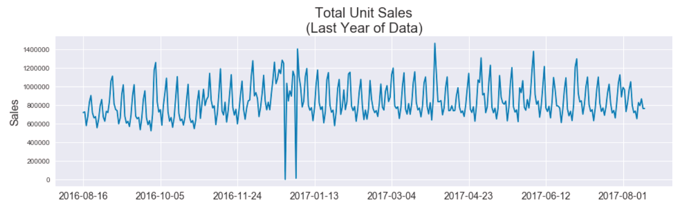
Hypothesis and Assumptions¶
Since the metric for this competition is the Root-Mean-Squared-Error of the log of predictions and truth, we felt it a natural choice to divide our prediction strategy into separate magnitude and proportion components. In doing so, we recognize the greater penalty for wrong-magnitude predictions over same-magnitude errors.
Given that there are 54 individual stores and 4100 items, we started with the assumption that no single store-item could greatly influence the total unit sales. We hypothesized it would be easier to determine the magnitude of our predictions from the total unit sales than from store-item specific training because, as the coarsest view of the data, the total unit sales would likely be the least noisy and suffer less from data sparsity. We planned to refine our view of the data successively (i.e. predict per-store unit sales next) if needed to predict magnitudes at a more detailed scale if needed.
Exploration¶
Taking the Discrete Fourier Transform of the data we saw that there were three clear peaks but also some incoherent energy at lower frequencies. (The x-axis is labelled in units of "days per cycle" instead of the typical units of "Hz" to allow for easier interpretation in the context of the problem.)
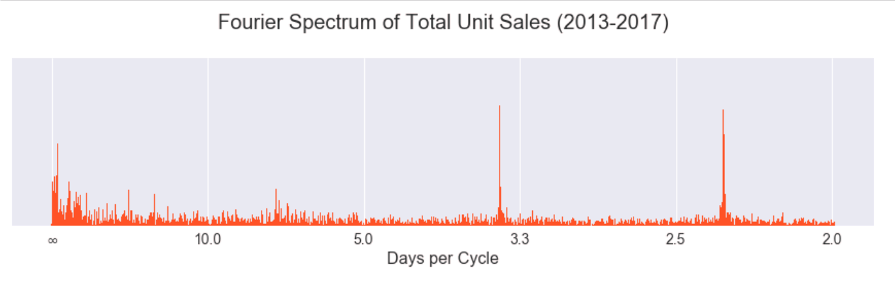
We suspected the results could be made more coherent if the signal was decomposed by band-pass filters into a filter bank (i.e. hierarchy of frequencies). While wavelets are a typical choice for such purposes, we chose to use a simpler and perhaps more intuitive approach via the Laplacian pyramid transformation, which is a technique borrowed from the image processing community.
Laplacian Pyramid¶
The Laplacian pyramid is a transformation that allows perfect reconstruction and separates the edges of an image at different scales. It successively convolves an image with a Gaussian kernel (blurring the image) and subtracts the convolved image from the original, leaving predominantly the highest frequencies, since the Gaussian kernel is a low pass filter. As each successive "level" of the pyramid is generated by this process, the subtraction is essentially taken between two signals filtered with Gaussian kernels of different scales (standard deviations). The original image is the result of previously performed Gaussian blurs, while the next image is filtered by one additional Gaussian blur. The scales of the Gaussians are effectively different (even though the kernel is unchanged throughout the process) because the signal is successively being downsampled. It so happens that the difference of two Gaussian filters with scale factor ~1.6 closely approximates the "Laplacian of Gaussians" filter commonly used in image processing for edge detection, hence the origin of the name "Laplacian pyramid."
Here is an example of the Laplacian pyramid performed on an image for demonstration. The results have been scaled to the same size but are actually downsampled by a factor of 2 horizontally and vertically at each stage of the pyramid. The colored image at the end is the highest level of the pyramid (the images are shown in ascending order of pyramid levels). The highest level contains the lowest frequency content.
The implementation of the Laplacian pyramid is simple as it only involves convolution with a Gaussian kernel and downsampling. The reconstruction process is also straightforward. It occurs by blurring and upsampling the highest levels of the pyramid and adding the result to the previous level until all levels have been collapsed back to the original. We were able to implement this transformation in all but 70 lines of Python code using numpy to handle the convolution. (Code can be found in our repository at pyramid.py.)
Here is the result of the DFT on total unit sales separated into different levels of the Laplacian pyramid. The lowest levels of the pyramid intuitively should contain more of the higher component frequencies of the signal. (The y-axis of these plots is in transformed units, not the original total unit sales. We removed the linear and loglinear trends of the data to provide better conditions for the DFT.)
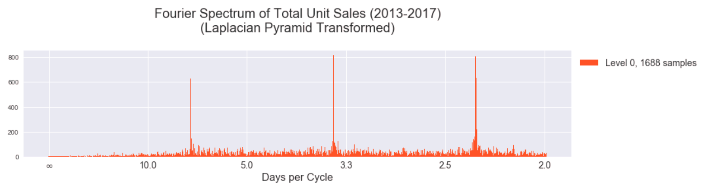 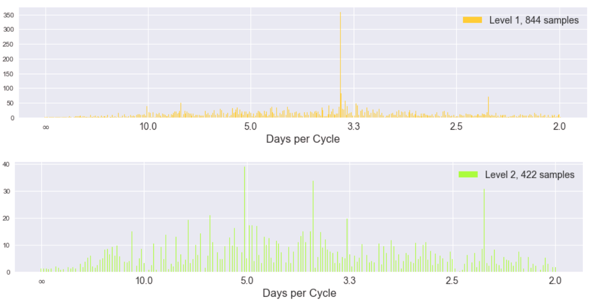 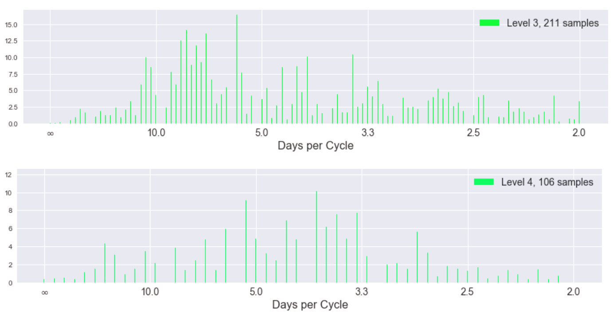 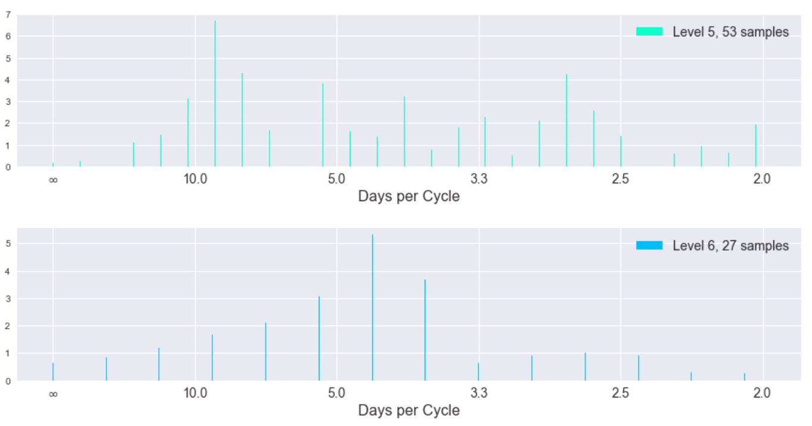 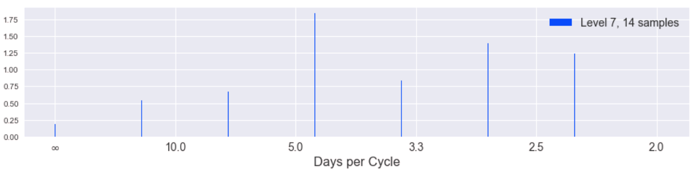 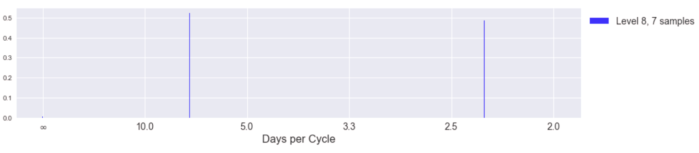 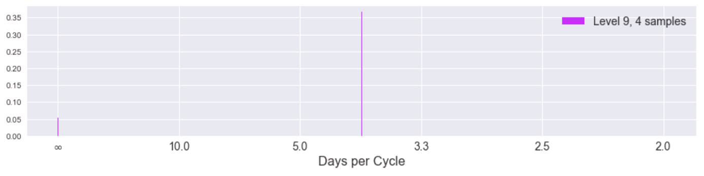
While the spectra become more uniform (incoherent) as we progress to higher levels of the pyramid (corresponding to lower frequencies of the original signal), the magnitude of the coefficients is also decreasing significantly. Here is the same information but in a stacked plot to show the coefficients of different levels in the same y-axis scale.
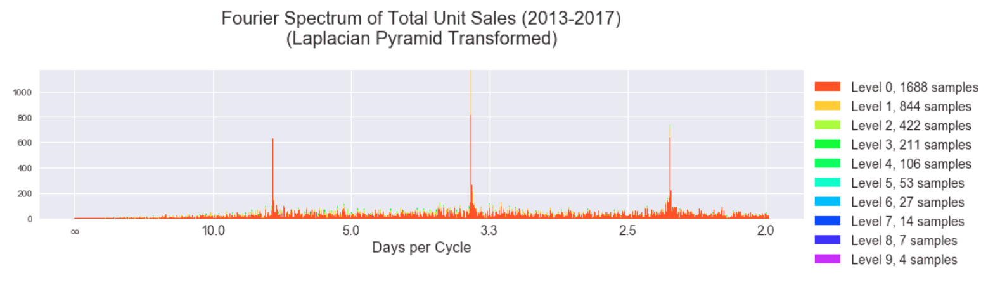
We can hardly see the influence of higher pyramid levels and we notice the incoherency at lower frequencies is gone in this stacked view. This tells us the highest frequency "edges" of our signal (the spikes) indeed happen at 2.3, 3.5, and 7 day cycles. Indeed we can see this periodicity manifest well in a plot of the last 60 days of the data, plotted with pyramid levels separated.
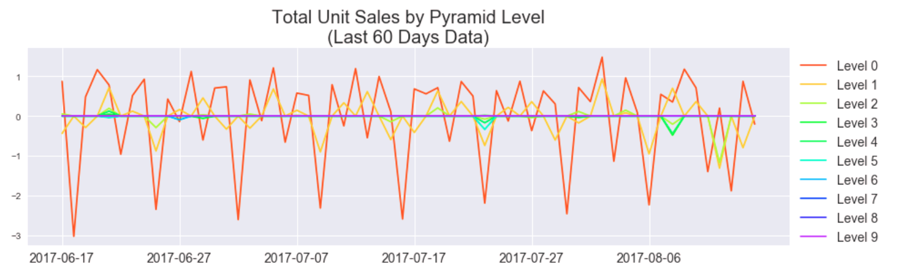
Compare to without the pyramid transformation over the same period of time.
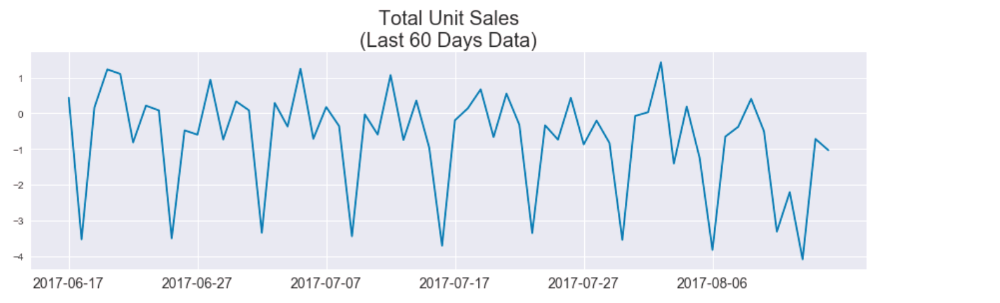
While qualitatively very similar, the Fourier spectra indicate that by separating the signal into pyramid levels we can recover a more coherent periodic pattern of the signal. We hoped to predict total unit sales using just the dominant signals of each pyramid level, but found mixed results.
Here are plots of thresholding the DFT coefficients.

Here is the recovered threshold and pyramid reconstructed signal versus the original (over last 15 days of each yearly segment in the data).
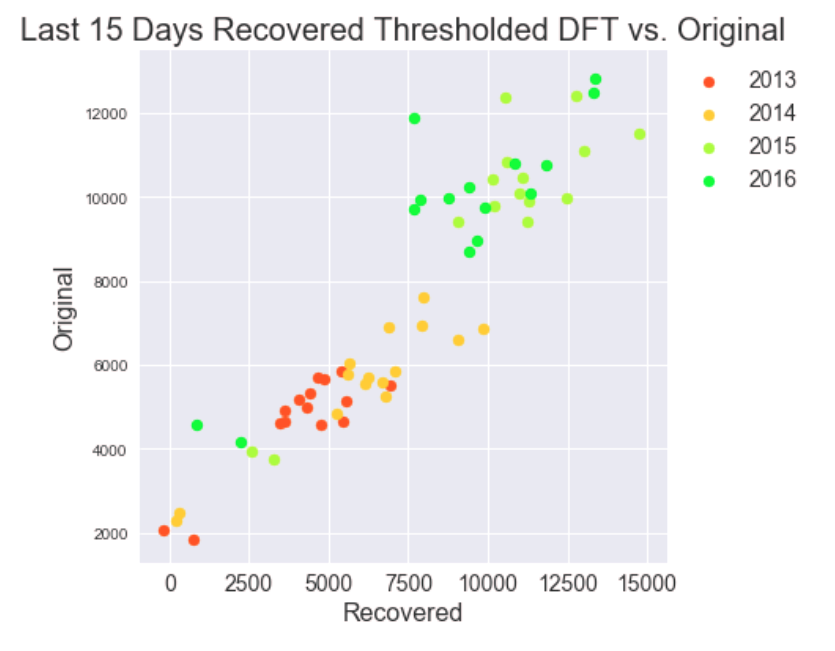
Here are the corresponding residuals.
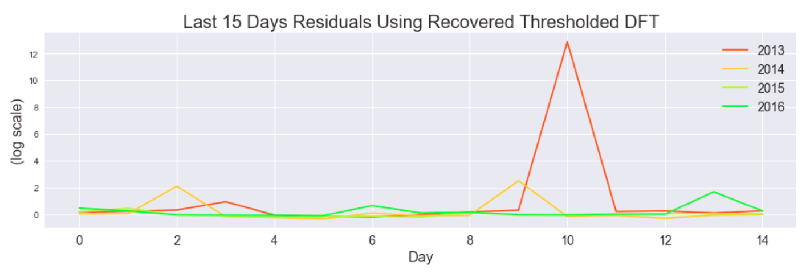
We hoped to use these periodicity-based insights as inputs to our models.
Autoregression¶
Baseline AR¶
As a baseline for how well autoregression should perform, we tried doing autoregression directly on unit sales for each item. For this, we simply used statsmodels' AR model, and trained it on item unit sales. The kaggle test set is 16 days, from August 16, 2017 to August 31, 2017. So, to get an idea of how this model would perform, we first trained it on all the data in the train set except the last 16 days, then predicted those last 16 days.
Some prediction results compared to the truth:¶

The best score we were able to get on Kaggle when running this AR model on the true test set was 0.662, training on a 365 day history instead of all the available train set. As a comparison, the baseline score provided on Kaggle was .911, a score obtained by using the previous year's sales as a prediction.
Multi-Level AR¶
Looking at the data, we noticed that on a per store level, the periodicity of the unit sales is much more visible and easier to predict compared to unit sales on a per item level. Many items average very low unit sales, so the signal is much lower resolution and is more sporadic.
Some sales totals for stores¶

Some sales totals for items¶

So we hypothesized that we may be missing out on some information about the overall trends by trying to predict item unit sales. To try to alleviate this issue, we decided to split unit sales data into 4 hierarchical categories, and train/predict on them separately. In our data, each item has a specified family and class, so we decided to use that to split the data categorically. In total, there are 4100 unique items, split into 337 unique classes, which are assigned to 33 unique families.
Example of the data available for each item¶

So after processing the data, we have 4 new datasets to train and predict on:
- Total unit sales per store
- Proportion of family sales per store
- Proportion of class sales per family
- Proportion of item unit sales per class
Then to transform our predictions back to the original target of unit sales per item, we can simply multiply these 4 predictions.
Dataset 1: Some unit sales per store predictions¶

For the next 3 datasets, we were predicting proportions in the range [0, 1], so we trained on a logit transform $log(\frac{p}{1-p})$ of the data. This way, when the predictions are transformed back with $\frac{e^{pred}}{1-e^{pred}}$, they are limited to the (0, 1) range.
Dataset 2: Some predictions for family proportion of store sales or $\frac{family\_sales}{store\_sales}$¶

Dataset 3: Some predictions for class proportion of family sales or $\frac{class\_sales}{family\_sales}$¶

Dataset 4: Some predictions of item proportion of class sales or $\frac{item\_sales}{class\_sales}$¶

Putting it all together:¶
To transform these predictions into a prediction for unit sales per item, we do $store\_sales * \frac{family\_sales}{store\_sales} * \frac{class\_sales}{family\_sales} * \frac{item\_sales}{class\_sales} = item\_sales$
Some unit sales predictions¶

Comparing these plots to the plots from the baseline AR predictions, it is not immediately apparent that the multi-level model is performing better. The multi-level autoregression did better on some items, but worse on others. However, we were able to score a .588 on Kaggle using this method, a ~16% improvement over the .662 that the baseline model scored.
Comparing the two models (error per sample over 16 day prediction period)¶


From the above graphs, it is clear to see that the multi-level AR predictions were better on average. The baseline AR predictions have some very high outliers when looking at errors for individual items, some as high as 35. In comparison, the multi-level AR's worst errors for individual items are close to 5. And when taking the difference of errors $ multi\ level\ errors\ per\ sample - baseline\ errors\ per\ sample$, the result is usually negative, meaning the multi-level model tends to have a lower error for a given sample.
Can we combine the best predictions from both to get a better prediction?¶
Comparing average error per store difference¶

Comparing average error per item difference¶

According to the errors, there are a few stores and some items that the baseline model tends to do better on. Again, these errors are from using the last 16 days of the Kaggle train set as a test set. So we tried using the best store results and the best item results based on these errors. The hope was that if a model did better on a given store or item in our test, it will also do better for that same store or item in the real test.
Unfortunately, in practice, keeping the best predictions based on average per store error gave a .600 and keeping the best predictions based on average per item error gave .594, neither an improvement over the multi-level AR model alone. Since the best store errors and best item errors were only based on one test set, we were probably overfitting to our test set. Comparing many predictions for different places in the training set could probably give a better idea of which model performs best on which store/item.
Conclusion for autoregression¶
With autoregression, we were able to significantly beat the baseline score .911 calculated from last years' sales, obtaining a .588 score on Kaggle at best. However, we were getting much better results with other models, so we did not explore autoregression further than this, and instead focused on improving our other models.
Machine Learning Method¶
All the models above can handle the time feature well, but cannot insert all those categorical features. In order to do that, we come to machine learning method for help. When applying those method, feature engineering and computation speed becomes extremely important.
1. First Try¶
Handling time series in traditional mathine learning method is rather tricky. We first dummy the date into year, month, the number of the week as well as weekday, and feed all the unit sale data into the models from 20160801 to 20170815. Besides, we dummy all the categorical features such as the state, city, store type and cluster and use them as new features. The model we've tired in this part including Random Forest, Bagging, XGBoost as well as MLP. The plot below descirbes the feature performance.

From the picture, we can see that XGBoost is still the best among the four machine learning models but they all get a score of more than 1, twice as large as the Moving Average's score and even larger than the last year model. The poor performance is because of the feature enginnering we made was not good. The date itself does not contain enough information, and feeding all the raw time series data will lead to overfitting. Besides, these four models need a huge amount of time to tune and train given the amount of training data. We need to find a faster model first before further feature Engineering.
2. LGBM is faster¶
LGBM is short for Light Gradient Boosting Method. Different from other boosing methods, this model splits the trees leaf-wise instead of level-wise, this allows LGBM to minimise loss faster and thus gain more computation speed. The pictures below describes the concept well.


With the help of LGBM, we get more time and more patience to do more feature engineering.
3. Feature Engineering¶
With the inspiration of moving average and smoothing method, we begin to view time series as a combination of trend, seasonality and noise. We want to capture the trend and seasonality instead of noise. First, for the trend, we calculate the average unit sales of each item in a certain store. The time period we used was firstly 7 days, 14 days, 28 days as well as 56 days, since this will capture the weekly mean as well as monthly trend. But after we did a FFT on the data we also discovered a period of 2 days and 3 days, so we add the 2-day mean and 3-day mean into our model too. We use these moving-average features to predict the following 16 days since the task is to predict the last 16 days' sale in August. In that way we capture the trend well. Next, to capture the seasonality, the 16 days of training data all begins on Wednesday, the same with the first day of the test set. We fit 16 LGBM model individually to the 16 days in our prepared training dataset. In this way we capture the short term seasonality well. However, in this way, our model only used the most information of 16 days and a small amount of information of 56 days. The way we use information is still insufficient. In order to cope with that, we created 4 training sets, begining at 6.28, 7.5, 7.12 and 7.19. For the yearly trend, we just ignored it, for we tried the same thing on 2016 and 2017 but after ensemble them the result got worse.
For transaction features, we used 7 day mean, 14 day mean and 28 day mean. For categorical features, we used store city and store cluster as well as onpromotion and amount of ompromotion in last 14 days. We also tried other features like oil price but it was total useless and ruined our result. The structure of feature engineering are shown below.

The feature importances of the first day and the last day in the training set are shown below.


The following table allows to view the order change of the 16 days more clearly.
 We can find that as the number of days goes up, 7 day mean's importance decreases while 56 day mean's importance increases. This indicating that as when the predicting date is far away from our training data, the importance of long term trend goes up while the importance of short term trend goes down.
We can find that as the number of days goes up, 7 day mean's importance decreases while 56 day mean's importance increases. This indicating that as when the predicting date is far away from our training data, the importance of long term trend goes up while the importance of short term trend goes down.
With this model, we reached a score of 0.520. After ensembled it with the result from moving average, we reached a score of 0.517, ranking 38/1126 in the competition.